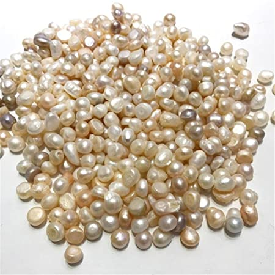
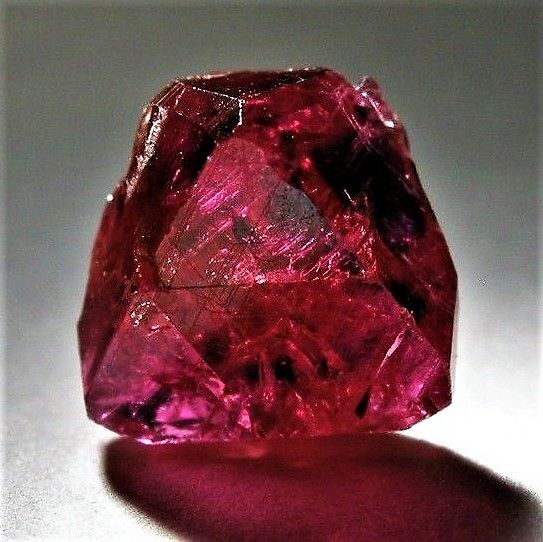

 Garnet Gemstone
Garnet Gemstone
Pearl Gemstone
Coral Gemstone
The Gemstone Agate
The mesmerizing look of garnet has made it the most famous dark red gemstone. They are widely used as decorative pieces in jewelry. It can easily be faceted into several different kinds of jewelry, including ring, earring, bracelet and necklace.
This incredibly attractive gemstone is known as ‘Yaqoot” in Urdu language. In this article, you will also find some useful content and information about garnet in Urdu. Here it should also be noted that some varieties are more popular as jewelry gemstone than the other.
The demand of a type of garnet, called Rhodolite, is growing day by day. Garnets not only look exclusively beautiful in jewelry but they are also easily affordable. Meanwhile, there are also some rare varieties of the gem which are significantly costly, such as Demantoid and Tsavorite. It is in fact the rarity which adds to their price.
The fame and demand of Yaqoot is owed to the unique dark red appearance of the stone. At the same time, it occurs naturally in several other hues. They are usually found in the red, black, gray, purple, pink and brown colors. Yaqoot is also likely to exhibit some other colors, like yellow, orange and green. Some garnets, such as Black Melanite and yellow Grossular, are known for their peculiar characteristic of color change. In means, their appearance changes as you view the gemstone in two different environments of natural and artificial light.
There are a number of different varieties of garnet which occur naturally and are characterized by a specific color. Among them, six have become very popular, including Uvarovite, Almandine, Grossular, Pyrope, Andradite and Spessartite.
Mali garnet is another type of the stone which has the prefix “Mali” attached to it particularly because it signifies the country of its origin. It is not all – you will also come across other such stones which are named after the country of their origin, e.g. Mozambique garnet. It is one of the very fine varieties, exhibiting a catchy red hue.
Do you know which variety of garnet is most common in the world? Well, it is Almandine. Here you will be surprised to know that Almandine is opaque and is not considered suitable for its use as a gemstone. However, there are some sub-varieties of garnet which are relatively transparent and reddish in appearance. This is what adds to their demand and utility as a gem.
You would have come across various different types of highly valuable gemstones the majority of which are of mineral or inorganic origin. However, they can also be of organic nature. Could you ever imagine that small sea creatures would be making a precious gemstone? It is amazing to note that the same has occurred.
The peculiarity of pearl gemstone lies in its organic nature. It is produced by living organisms and contains organic matter as its essential ingredient. These are the mollusks, particularly oysters and mussels, that synthesize pearls inside the layer of soft tissue in their body.
Do you have any idea about the composition of the extremely beautiful gemstones, you call pearls? By composition, they are made up of calcium carbonate (CaCO3) and a tough, insoluble proteinous compound, called conchiolin.
Both the compounds, i.e. calcium carbonate and conchiolin, are secreted by an oyster or mussel. They form concentric layers which appear as rounded, circular rings around a central point.
A pearl has been regarded as a highly valuable and precious gemstone since the ancient times. It may exhibit a number of different colors, including those of white, black, yellow, green and blue. You can also find it in different other color patterns, such as gray, purple, pink and brown. Meanwhile, there is also possibility that a pearl will exhibit multiple colors at the same time.
Akoya Pearl is one of the most popular forms of the gemstone. Here the word “Akoya” has its origin in the Japanese language. Naturally, it looks white in appearance. Sometimes, it is subjected to treatments which result in change in its hue from white to dark blue or black. In this way, the buyers get more choices for the color, and they can go for the one that is most appealing to their taste.
Metallic luster and a consistent rounded shape serve as characteristic features of this particular variety of pearls. Akoya pearls usually occur in the salt-waters along the coast of Japan. Golden South Sea Pear and White South Sea Pearl are other popular types of the gemstone. As the very name suggests, they are found in the South Sea.
As you know, most of the gemstones are minerals in nature but coral gemstone is of different origin. It is formed by living organisms and is organic in nature. The coral polyps living in the tropical and subtropical waters of ocean create antler-like structures. On the death of polyps, their hardened skeletons are left behind which, with the passage of time, get transformed into a gemstone. Majority of the corals are white in color but you can also find them in different other colors including those having orange to red hue.
Do you know in which color the coral is most used as a gemstone? It is none other than the Red Coral. It is the most valued gemstone from of coral. Owing to its demand and popularity, the Red Coral is also known as Precious Coral. Another well-known variety is the Black Coral. It has got black color and is built by the marine coral species that belong to antipatharia family. Corals are usually composed of calcium carbonate and have amorphous crystalline system. Concerning transparency, they may be translucent to opaque.
This rare and precious gemstone has been used by mankind for thousands of years. In majority of the cases, they are found only in lovely solid color. At the same time, there is possibility for them to be found in swirls or zones of multiple colors, including red, orange, pink and white. By the use of polish, you can bring out its glassy luster. The beautiful coral gems are used in a variety of ways. For example, you can use them either as beads or make small flower-like carvings for brooches and pins. People also make use of small branches of corals in necklaces.
Depending on the type of polyp formation, their structure may be either solid or porous. Here you also need to know that corals cannot give you a durable gemstone because they are usually very soft and brittle. You will also find it susceptible to chipping and scratches. That is why, if you already have the coral gemstones, you should handle them with some extra care. In case it is broken, all your investment will go into ruin.
Laws have been passed at the international level for the protection of natural environment and the safety of life both on the land and the aquatic environment. Such laws prevent the use of corals as gemstone. That is whythe gemstone trade is on the decline.If this be true, the gem lovers will have to look for other gemstones.
The name of agate is derived from the place where it was first discovered, i.e. the Achetes River in Sicily. In Urdu, it is known as “Aqeeq”. Belonging to theminerals of quartz family, agate occurs in a number of varieties in nature. In most of the cases, it is banded in stripes or layers. Sometimes, “eye” markings, specks of colors and fossils are used to add to their grace. There are concentric bands of various different colors which are arranged in such a way that they look like rainbow. Just like zircon, it also occurs in the colorless form.
Discoveries have shown that Neolithic people were the first to use agate in their artifacts in Babylon. People used it in their ornaments and believed that it would save them from bad luck and illness. The ancient Greek and Egyptian civilizations also associated healing power with this gemstone. Such a property made it popular throughout the African continent, the Middle East and even Russia—world’s largest country by area. The amazing characteristic of agate inspired the need for the establishment of an industry for stone-cutting and polishing in Germany in the 15th century which exists till today.
Looking at the metaphysical characteristics of agate or Aqeeq, it has got relatively low intensity. In comparison with other such stones, it can vibrate to a low frequency. The stone is also known to have great stability and strength. Though seemingly delicate, the layers of bands are wonderfully strong.People think of it as having magical powers that can balance the negative and positive forces in the universe. At the same time, it is also believed that Aqeeq can harmonize and balance the intellectual, physical and emotional energies in the body.
You will be surprised to know that there are hundreds of different types of agates that can be found in almost every part of the world. The swirls of color bands on them are so fascinating. Their metaphysical properties cause even greater amazement. Here follows a list of some of the most popular agate types
Also called the perfect spiritual flame, fire agate contains great mysteries in its crystal of deep brown color. Fiery ambers start emanating from the stone as you just touch it with finger. As you peep into its depths, you will see flames coming from its chambers.
The sky-blue color patterns and soft and soothing elegance of the blue lace agate leave an extremely pleasing effect on the eyes of the viewer. Metaphysically, it is thought to give support and encouragement to the individuals wearing it. However, it cannot protect from disease.
As the very name suggests, the Stone of Plentitude or dendrite agate is considered the source of success and progress in every field of liferanging from agriculture to business. The ancient Greeks associated it with tree spirits and dryads. For the sake of getting good harvest, they buried it in the soil at the time of harvesting crops.
Alternatively known as ‘happy lace’ or laughter stone, it is thought to give pleasure and joy to those who wear it. Like the blue lace agate, it does not give protection against illness but instead promotes optimism and elevates thoughts. The lacy patterns give rise to circular flow of energy which, in turn, stimulates the mind.
The World’s most highly praised banded agate, the Laguna agate is characterized by very tight banding which gives off vibrant shades of scarlet and red color. It is limited to just four square miles in a mountainous range of Mexico.
Summing up, various types of agates are believed as possessing amazing metaphysical properties that are the source of security, warmth, maturity, stability, protection and self-confidence for the individual wearing them. There are certain types of agates which are associated with power to protect against bad luck and illness. Pregnant women wear it for the safety and health of their fetus.The list of the metaphysical properties is fairly long.